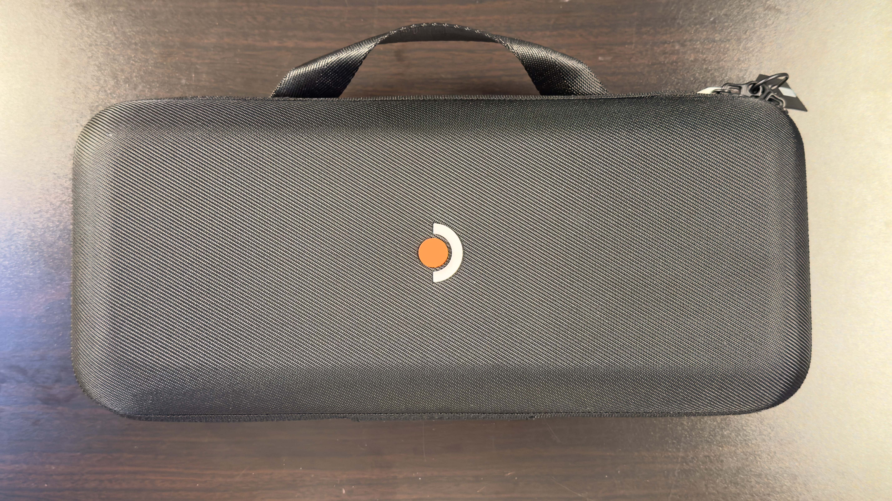

Steam Deck OLED が届いたので早速開封＆レビューしてみる
使い込むのがめっちゃ楽しみ！！
11月17日（土）、ValveよりSteam Deckの後継機？である「Steam Deck OLED」が発売されました。
Valve曰く、「Steam Deck 2」ではない、と語っていたので、Steam Deckのマイナーチェンジ版のようです。。。
それはともかく、開封していきましょう。
私は11月28日（火）にKOMODO公式ページで購入しました。
30日（木）に佐川急便で発送され、翌日12月1日（金）に到着しました。
箱のデザインがめちゃくちゃValveっぽくて面白いです。
一番左の図、どう見てもゲーム「Portal」に出てくるブロックですね本当にありがとうございました
調べたら、正式名称は「Aperture Science 加重コンパニオンキューブ」というらしい。どうでもいいわ
Portal Wikiより
開けたらなんかシールと案内書が入っていました。
「電気用品安全法に基づく表記部分に更新がございました。」
どうやら、付属のACアダプタに貼り付けるシールのようです。おまけ的なものではないみたい
中の箱を開けると、SteamDeckケースに入っているであろう本機と、付属のACアダプタが出てきました。
箱の裏側には謎の文字がびっしり。
「待ち時間に」「駅で」「観覧車で」とか書いてあります。観覧車でこれで遊ぶ人いるのかな
先に左側の箱を開けてみましょう。
さっきのダンボールの側の図に書いてあったキューブのイラストがまた書いてあります。
中を開けたらACアダプタが入っていました。
といっても、本機はUSB-C充電なので、手持ちのUSB-C充電器でも充電できます。
プラグのついているアダプタとケーブルはくっついており、外すことはできません。
縦向きにプラグがついているので、一般的な電源タップでは横に刺さっているプラグと干渉することはないはずです。
最大で20V 2.25A、つまり45Wですね。
先程入っていたシールはここに貼り付けるみたいです。
ACアダプタ本体には、「チコニーエレクトロニクスジャパン株式会社」と書いてありました。
PC周辺機器や、電化製品の製造をしている台湾のメーカーのようです。
張り替えておきました。
箱の中に安全や規制などに関する紙が入っていました。
では！ついに本体の開封といきましょう！
「Your games in a whole new light」
まったく新しい観点からゲームを。
わくわくします！
本体を収納するケースです。
表面はとても固く頑丈で、シートベルトのような質感です。
Steam Deckのロゴがかっこいいですね！
開けようと思ったら、チャックの部分にタグが固定されていました。
これをハサミで切らないと開けられないので、盗難防止でしょうね。
どうやって固定されていたのかな～と思ったら、2つのチャックが重なるときに、貫通するように穴が空いていました。
南京錠でもつければいいのでしょうか。

裏にはくぼみが空いていました。
ひもかわうどんのようなゴムがついていて、くぼみにモノを入れられるようになっていました。
充電器をここに入れれば、持ち歩きができますね！
いつまでケースの紹介してるんだ、って怒られちゃいますね^_^;
もう本体出しちゃいましょうか。
おおおおっ！！！！
すごいです！かっこいいです！デカいなおい！
第一印象は、「思ってたよりデカい」でしたw
よく比較対象になるNin○○○do Switchは今手元にないんですが、これは横にとても長いです。
手に持ってみると、コントローラーの操作ボタンが上の方にあることに気づきました。
自然に持つと、親指の位置がタッチパッドの位置にきます。
スティックを操作するには上の方を意識して持つような感じです。
重心が下の方に来るので、滑って落としそうで怖いですね...
ただ、筆者はコントローラーのトリガーを、人差し指と中指でそれぞれ使う派なので、トリガーを人差し指で操作するように持つと、手の腹が下にフィットして持ちやすかったです。
これは私の問題なのかな？
背面はこんな感じ。
普通に持つと、中指と薬指の位置にグリップボタンがあります。
このボタンはカスタマイズできるようで、PCゲームならではの操作キーの多さにも対応できるようになっている？ということだと思います。
グリップボタンは、本体を強く握ったときに間違えて押してしまわないように固めに作ってあるそうです。
確かに、押してみると結構硬いです。押したときに、手の腹の筋肉が動いているのがわかるくらい硬いです。
あと、中央のValveロゴ、かっこいいですね～！
Valveロゴ自体が斬新で面白いデザインなので、なんだかメカメカしく感じます。
上面には電源ボタン、USB-Cポート、排気口、3.5mmジャック、音量ボタンとトリガーがあります。
厚さは、薄くも厚くもない、という感じですね。
厚さを測ろうと電子ノギスを出したんですが、電池がなくて測れませんでした...ｼｮﾎﾞｰﾝ(´・ω・`)
大体20mmくらいだと思います。
左右のグリップする部分の付け目だけ、少し薄く溝がありました。握りやすい！
翌日の追記：ノギスの電池買ってきて測ってみたら、19.6mmで、グリップの薄くなっているところは、17.6mmでした。ちなみに薄くなっているのは底面側だけで、上面から見るとフラットです。
電源をつけてみました。
有機EL、いいですね！黒い部分に色の変化がないので、ロゴが表示されたときは不思議な雰囲気でした。
解像度は 1280x720 です。画面が小さいので、PPI（Pixel Per Inch）が高いです。
計算してみると...約200PPIでした！27インチのFHDモニターのPPIは約80なので、2.5倍画面がきれいって訳ですね！

起動すると、早速初期設定画面が出てきました。
Steam DeckはLinuxArchベースである、SteamOSが使われています。
Steam Deck専用に改造されているOSなので、本機の使用は、基本的にPCの知識は関係ありません。
ソフトウェアのレビューはまた今度やろうと思います。
あ、本機のケース内のSteam Deck OLEDの下にSteam Deckのロゴが入った画面クロスが入っていました。
なんか使うのがもったいないな...
箱の裏の文字は、箱をバラしてみると裏面全体に印刷されていました。
これわざわざ印刷しているんだね
Steam Deck公式サイトに、Steam Deckのプロトタイプやいろんなロゴの写真がありました。
ぜひ見てみてね！
Steam Deck ソフトウェアのレビューはまた今度行うと思います。
またね。
p.s. ソフトウェアレビューのやる気がないので多分やりません、、、てへぺろ(・ω<)